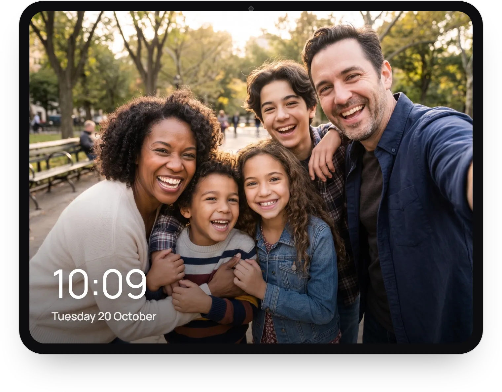

A few weeks ago I wrote about how you might already own a HomeView: the old iPad in a drawer, turned into a Home Assistant dashboard that wakes up when you walk into the room. That post was about what happens when you walk in. This one is about what happens when you walk out.
Until now, the answer was: not much. When nobody was around, DashPad showed a dark clock or a blank screen. Pretty much an off screen.
Then Apple showed HomeView, and what stuck with me wasn't the dashboard. It was that when nobody is using it, it doesn't look switched off. It shows a clock face, or your photos. A screen in your home can be so much more than a black rectangle: playful, informative, or just nice to look at.
So in DashPad 1.5 the idle screen stops being the off state and becomes the fun part.
A Clock Worth Looking At
There are six new clock faces: Numerals, Tiles, Words, Halves, Sweep and Dots. Each comes in seven colour themes and a choice of typefaces, and you can pick one from live previews in Settings, or on day one during onboarding. They also move a few points every now and then, so they never burn in.


Words tells the time the way you would say it, in English or Spanish.
The original clocks are still there, now called Dark Digital and Dark Analog. In a bedroom or a dark hallway, black is still the right answer.
Your Photos
Pick one photo to keep on screen, or up to 50 for a cool slideshow.

Last time I said that "trust me" is not good enough for an app that lives in your home, and family photos are exactly the kind of thing that should stay there. So DashPad never gets access to your photo library: the system picker hands over only the photos you choose. DashPad keeps its own screen-sized copies, without location data, out of your backups, and never uploads them anywhere. The privacy policy spells this out, and the code is there to check it.
Or Your Own Dashboard
The third option has been there for a while, but it deserves more attention: the idle screen can show any web page, separate from your main dashboard. If you use Home Assistant, that means a second dashboard made just for when nobody is around: the time and the weather, the calendar for the week, or anything else you want on the wall.
In 1.5 this mode got more reliable too. A tap always takes you back to your main dashboard, videos play on their own, and if the page can't load, DashPad tells you and keeps trying instead of leaving you with a black screen.
A Few Smaller Things
There's a new Prevent Auto-Lock option, a 12 or 24-hour setting for every clock, and the dark clocks now change exactly on the minute. The full list is in the changelog.
Still Not a HomeView
DashPad isn't trying to be a HomeView. It's an old iPad running your Home Assistant dashboard, and it knows only what Home Assistant tells it. But if HomeView made you think about that iPad in the drawer, it can now do a lot more than switch off when you leave the room.
DashPad 1.5 is on the App Store, and the source is on GitHub. If you try it, I would love to know what ended up on your wall: a clock face, your photos, or a dashboard of your own. Write to me at dashpad@rafapages.com.